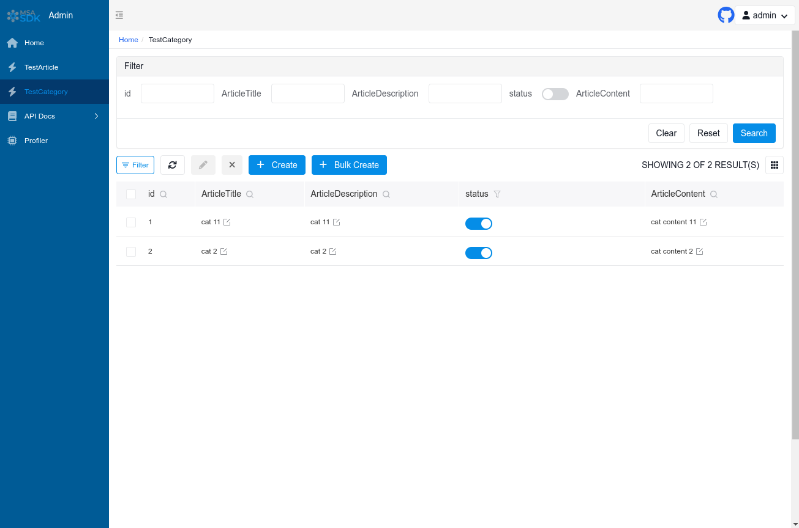

Auth Admin Site¶
msaSDK Auth
msaSDK Auth.
Auth Site that extends the Admin Site Web UI with Login/Auth for the API's.
Simple Example¶
Just define in the Service Definition (Settings)
site_auth: bool = False
# -*- encoding: utf-8 -*-
"""
Copyright (c) 2022 - U2D.ai / S.Welcker
"""
__version__ = "0.0.1"
from msaSDK.models.service import get_msa_app_settings
from msaSDK.service import MSAApp
# get the MSA app setting, clear the cache, set some settings
get_msa_app_settings.cache_clear()
settings = get_msa_app_settings()
settings.title = "SPK.ai - MSA/SDK MVP"
settings.version = "SPK.0.0.1"
settings.debug = True
settings.site_auth = True
# Create the main app instance, like FastAPI but provide a Setting Definition Instance
# Define if the optional Admin Site gets mounted automatically, if False you need to Mount in your own Startup MSAUIEvent Handler
app = MSAApp(settings=settings, auto_mount_site=True,
contact={"name": "msaSDK", "url": "http://u2d.ai", "email": "stefan@u2d.ai"},
license_info={"name": "MIT", "url": "https://opensource.org/licenses/MIT", })
# use the internal logger of app
app.logger.info("Initialized " + settings.title + " " + settings.version)
# Optional use startup event
@app.on_event("startup")
async def startup():
app.logger.info("msaSDK Own Startup MSAUIEvent")
# Optional use shutdown event
@app.on_event("shutdown")
async def shutdown():
app.logger.info("msaSDK Own Shutdown MSAUIEvent")
Validation Method¶
Decorator¶
- Recommended scenario: Single route. Supports synchronous/asynchronous routing.
@app.get("/auth/user")
@app.auth.requires()
def user(request: Request):
return request.user
@app.get("/auth/admin_roles")
@app.auth.requires('admin')
def admin_roles(request: Request):
return request.user
@app.get("/auth/vip_roles")
@app.auth.requires(['vip'])
async def vip_roles(request: Request):
return request.user
@app.get("/auth/admin_or_vip_roles")
@app.auth.requires(roles = ['admin', 'vip'])
def admin_or_vip_roles(request: Request):
return request.user
@app.get("/auth/admin_groups")
@app.auth.requires(groups = ['admin'])
def admin_groups(request: Request):
return request.user
@app.get("/auth/admin_roles_and_admin_groups")
@app.auth.requires(roles = ['admin'], groups = ['admin'])
def admin_roles_and_admin_groups(request: Request):
return request.user
@app.get("/auth/vip_roles_and_article_update")
@app.auth.requires(roles = ['vip'], permissions = ['article:update'])
def vip_roles_and_article_update(request: Request):
return request.user
Dependencies (Recommended)¶
- Recommended scenarios: single routes, route collections, MSAApp applications.
from fastapi import Depends
from typing import Tuple
from msaSDK.auth import Auth
from msaSDK.auth.models import User
app = MSAApp...
@app.get("/auth/admin_roles_depend_1")
def admin_roles(user: User = Depends(app.auth.get_current_user)):
return user # or request.user
@app.get("/auth/admin_roles_depend_2", dependencies=[Depends(app.auth.requires('admin')())])
def admin_roles(request: Request):
return request.user
app = MSAApp(dependencies=[Depends(app.auth.requires('admin')())])
@app.get("/auth/admin_roles_depend_3")
def admin_roles(request: Request):
return request.user
Middleware¶
- Recommended Scenario: MSAApp Application
Direct call¶
- Recommended scenarios: Non-routed methods
from msaSDK.auth.models import User
async def get_request_user(request: Request) -> Optional[User]:
# user= await auth.get_current_user(request)
if await auth.requires('admin', response=False)(request):
return request.user
else:
return None
Token Storage Backend¶
NSA auth supports multiple token storage methods. Default is: DbTokenStore, suggest to customize it to: JwtTokenStore.
JwtTokenStore¶
from msaSDK.auth.backends.jwt import JwtTokenStore
from sqlalchemy.ext.asyncio import create_async_engine
from sqlalchemy_database import AsyncDatabase
engine = create_async_engine(url='sqlite+aiosqlite:///amisadmin.db', future=True)
auth = Auth(
db=AsyncDatabase(engine),
token_store=JwtTokenStore(secret_key='09d25e094faa6ca2556c818166b7a9563b93f7099f6f0f4caa6cf63b88e8d3e7')
)
# Auth Admin Site
site = AuthAdminSite(
settings=Settings(database_url_async='sqlite+aiosqlite:///amisadmin.db'),
auth=auth
)
DbTokenStore¶
from msaSDK.auth.backends.db import DbTokenStore
auth = Auth(
db=AsyncDatabase(engine),
token_store=DbTokenStore(db=AsyncDatabase(engine))
)
RedisTokenStore¶
# Creating auth objects with `RedisTokenStore`
from msaSDK.auth.backends.redis import RedisTokenStore
from aioredis import Redis
auth = Auth(
db=AsyncDatabase(engine),
token_store=RedisTokenStore(redis=Redis.from_url('redis://localhost?db=0'))
)
RBAC Model¶
The RBAC model used in this system is as follows, you can also expand it according to your needs.
- Reference: Design of permission system
flowchart LR
User -. m:n .-> Group
User -. m:n .-> Role
Group -. m:n .-> Role
Role -. m:n .-> Perimission Advanced Expansion¶
Expanding the User model¶
from datetime import date
from msaSDK.admin.models.fields import Field
from msaSDK.auth.models import BaseUser
# Customize the `User` model, inherit from `BaseUser`.
class MyUser(BaseUser, table=True):
birthday: date = Field(None, title="Date of Birth")
location: str = Field(None, title="Location")
# Create auth objects using a custom `User` model
auth = Auth(db=AsyncDatabase(engine), user_model=MyUser)
Extending the Role,Group,Permission model¶
# Customize `Group` model, inherit from `BaseRBAC`;
# override `Role`, `Permission` model is similar, the difference is the table name.
class MyGroup(BaseRBAC, table = True):
__tablename__ = 'auth_group' # Database table name, must be this to override the default model
icon: str = Field(None, title = 'Icons')
is_active: bool = Field(default = True, title = "Activate or not")
Customize UserAuthApp default management class¶
The default management classes can be replaced by inheritance overrides.
For example: UserLoginFormAdmin,UserRegFormAdmin,UserInfoFormAdmin,
UserAdmin,GroupAdmin,RoleAdmin,PermissionAdmin
# Custom model management class, inheritance rewrites the corresponding default management class
class MyGroupAdmin(admin.ModelAdmin):
group_schema = None
page_schema = PageSchema(label = 'User Group Management', icon = 'fa fa-group')
model = MyGroup
link_model_fields = [Group.roles]
readonly_fields = ['key']
# Customize the user authentication application, inherit and rewrite the default user authentication application
class MyUserAuthApp(UserAuthApp):
GroupAdmin = MyGroupAdmin
# Customize user management site, inherit rewrite the default user management site
class MyAuthAdminSite(AuthAdminSite):
UserAuthApp = MyUserAuthApp
# Use the custom `AuthAdminSite` class to create the site object
site = MyAuthAdminSite(settings, auth = auth)
Interface Preview¶
Login Screen¶
- Open
http://127.0.0.1:8090/admin/auth/form/loginin your browser:
Home Screen with System Info¶
- Open
http://127.0.0.1:8090/admin/in your browser:
CRUD of SQLModels Screen¶

OpenAPI Interactive Documentation (Swagger) Screen¶
- Open
http://127.0.0.1:8090/admin/docsin your browser:
License Agreement¶
msaSDKBased onMITopen source and free to use, it is free for commercial use, but please clearly show the copyright information about msaSDK - Auth Admin in the display interface.
Last update:
September 12, 2022
Created: September 9, 2022
Created: September 9, 2022